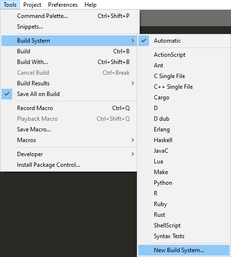
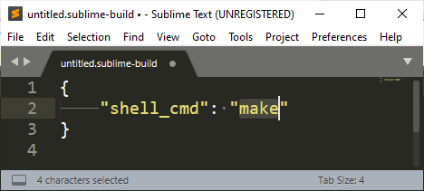
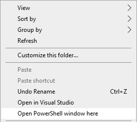
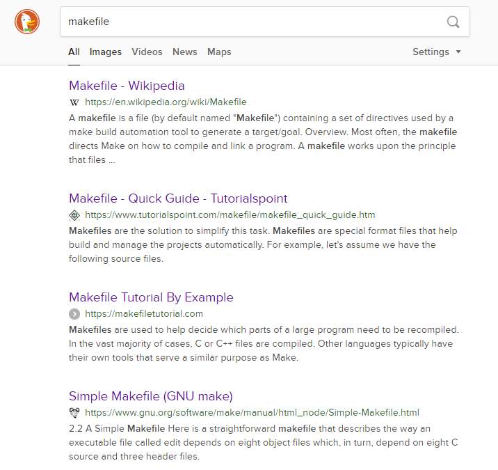
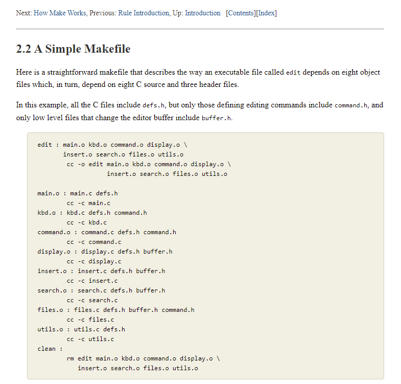
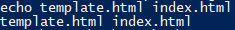
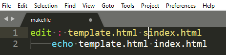

Navigation Bar
This page is about the thought process of creating a navigation bar for this website, which you can see in the top of this page.
Most web pages nowadays have a navigation bar. As the name implies, it allows viewers navigate easily between a group of web pages. The navigation bar is present on all pages in the group and has a consistent look even as you switch between the pages
But, there seems to be a big issue. Each page is a separate HTML file. The navigation bar is duplicated amongst each file.
Some things could be done on the server side to prevent this duplication,
but that requires additional cost. Since I am not aware that Github Pages supports this,
I want something that can be used on any simple web server.
navigation bar header
content iframe
My first thought was to use iframes to make the browser fetch the navigation bar and the content separately.
Perhaps the navigation bar can be on the outer page and the content on the inner page.
The problem with this that it would not be friendly to search engines.
If a search result landed on the inner page, there would be no navigation bar for users.
This could be useful, but I did not want this behaviour for this web page.
navigation bar iframe
contents
If a navigation bar is required for each web page, the content could be the outer page and the navigation bar the inner page.
Unfortunately, the inner page is in a separate browsing context, so if you click a link on an inner page,
it is unable to make the outer page follow the link without the use of scripts.
Scripts might introduce additional security issues in the future.
Some users may also disable scripts because of privacy concerns.
After toying around with this idea for a bit,
I ended up going back to the method of duplicating the navigation bar across all the pages.
In that case, there is going to be a duplicate copy of the same navigation bar in each HTML file.
However, this means that if the navigation bar is to be modified, all the pages in the group need to be modified.
Doing that manually could become tedious.
It would get more annoying if the number of pages in the navigation bar gets bigger.
I thought to myself, "Wouldn't it be great if I could just press a button to update all the files with the new navigation bar?"

While looking through the menus of the Sublime Text toolbar,
I found the "Build" function.
Seems promising. Maybe it can let me run some command on the keyboard shortcut.
Pressing "New Build System", It seems like the default command used is "make"! Sounds familiar.

"make" is something that I encounter a lot while looking through software projects on GitHub.
I used to dislike it because I didn't know how to use it and I didn't want to install another piece of software on my computer.
Perhaps it's time to learn how to use "make".
 I opened up a powershell window by shift-right clicking the explorer window. I suppose the regular "cmd" command prompt would work as well, but since Windows 10 is now using Powershell as the default option, it's more convenient.
I typed in "make" and pressed enter. This error appeared.
I need a makefile. I just need to search for an example online.
The fourth result was particularly helpful. Here is a link

Nice. The example given is for C source files, but it should also work for my case.
Essentially, what is happening is that some input files are converted to some output files.
In the case of the example, we can specify the conversion from C source files to C object files,
and also specify the conversion from C object files to executable.
In my case, I will specify the conversion from some template files to resulting HTML files.
It seems like it can check for the existence of files and run a command if they exist.
A small makefile was created to test this hypothesis. The directory contains "template.html" and "index.html",
and if they exist, the echo command should be run.
It seems to be working!
Next, I will change it so that a file does not exist. It should not run the echo command.
Perfect! It did not run the echo command.
After that, I went about making a powershell script to apply a template file to a html file. Unfortunately, the deadline of the creation of the webpage was approaching and I didn't have the time to document the creation of the powershell script. Now, updating the navigation bar is as simple as pressing Control-B. You can take a look at the source codes yourself if you want to find out how it works.